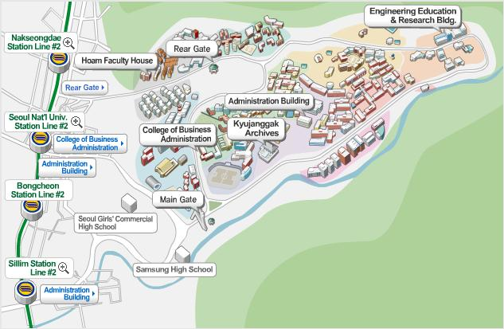
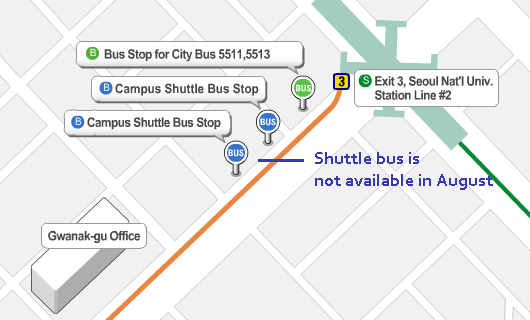
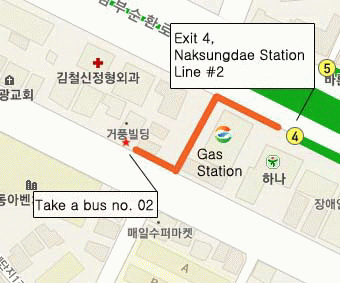
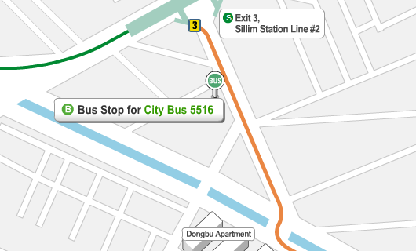

|
|
|
| Transportation Information |
|
From the Airport
Limousine Bus
Limousine bus is a convenient and inexpensive way to get to SNU Gwanak Campus from Incheon International Airport. Take airport limousine bus number 6003 via Gimpo Airport and get off in front of the Main Gate of SNU. Bus fare is 8,000 won and it takes about 80 minutes under normal traffic conditions. Service is available everyday from 5 am to 10:45 pm (SNU → IIA: 4:40 am to 8 pm) at Incheon International Airport with no charge for the baggage.
* If you stay at Hoam Faculty House, after getting off the limousine bus in front of the main gate of SNU, take a taxi to Hoam and show the Korean instruction below:
Taxi Service
The fare for taxi service between Incheon International Airport and SNU Gwanak Campus is around 40,000 won depending on the traffic situation. By Deluxe Taxi (Mobeom Taxi), which offers kinder service, the approximate fare is 60,000 won.
Using Public Transportation

Subway-Bus
Subway Line No. 2 (Green Line), Seoul National University Entrance Station (Exit No. 3)
After exiting exit no.3, walk towards the Gwanak-gu Office. There you will find a regular bus stop in front of Starbucks that comes to SNU.
Buses number 5511(clockwise) and 5513(counter-clockwise) circulate the campus, from the main entrance towards the Administration Building. When you come to the workshop venue from the SNU station, we recommend bus No. 5513. The bus stop at the workshop venue is positioned on the campus map in the menu of venue of this homepage.

Subway Line No. 2 (Green Line), Naksungdae Station (Exit No. 4)
After exiting through exit no. 4, walk straight and make a left at the gas station and use the Town Bus No. 2 in front of the bakery. You can come to the Hoam Faculty House by this town bus.

Subway Line No. 2 (Green Line), Shillim Station (Exit No. 3)
After exiting through exit 3, take bus no. 5516, which circulate counter-clockwise from the main entrance towards the Administration Building and pass by the College of Agriculture and Life Sciences (Bldg. 200) and College of Engineering (Bldg. #301).

* The Seoul Metro Guide : Seoul Metro Map
Bus
Buses that travel via SNU
Green: 5411, 5412, 5517, 5522, 5528, 5613, 5614, 6511, 6512, 6513, 6514 Blue: 501, 502, 750
* Detailed service route: http://bus.seoul.go.kr
|
|
|